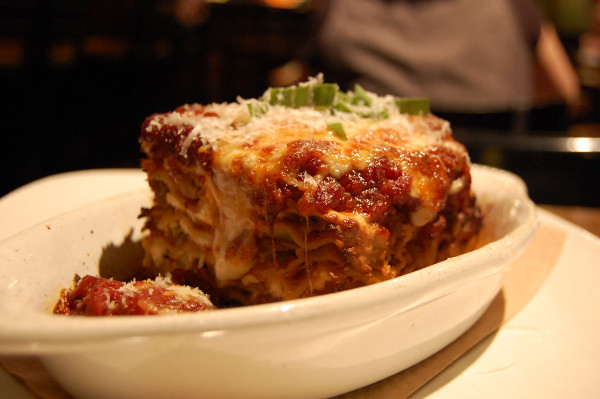

Lasagna

Description
Lasagna is a wide, flat sheet of pasta. Lasagna can refer to either the type of noodle or to the typical lasagna dish which is a dish made with several layers of lasagna sheets with sauce and other ingredients, such as meats and cheese, in between the lasagna noodles.
Ingredients
- Lasagna Noodles
- Mozzarella Cheese
- Parmesan Cheese
- Tomato Sauce
- 1/2lb Lean Ground Beef
- 1/2lb Italian Sausage
- 1 Onion (Diced)
- 2 Cloves Garlic
- 36 ounces Favorite Pasta Sauce
- 2 tablespoons Tomato Paste
- 1 tsp. Italian Seasoning
- Cheese Mixture
- Ricotta Cheese
- 1 Beaten Egg
- 1/4cup Parsley
Instructions
- Heat oven to 350°F. Cook pasta al dente according to package directions. Rinse under cold water and set aside.
- Brown beef, sausage, onion and garlic over medium high heat until no pink remains. Drain any fat.
- Stir in pasta sauce, tomato paste, Italian seasoning. Simmer 5 minutes.
- Make Cheese Mixture by combining 1 ½ cups mozzarella, ¼ cup parmesan cheese, ricotta, parsley, and egg.
- Add 1 cup meat sauce to a 9x13 pan.
Top with 3 lasagna noodles.
Layer with ⅓ of the Cheese Mixture and 1 cup of meat sauce.
Repeat twice more.
Finish with 3 noodles topped with remaining sauce.
- Cover with foil and bake 45 minutes.
- Uncover, sprinkle with remaining cheese (2 ½ cups mozzarella cheese and ¼ cup parmesan), and bake an additional 15 minutes or until browned and bubbly. Broil 2-3 minutes if desired.
- Rest 10-15 minutes before cutting.